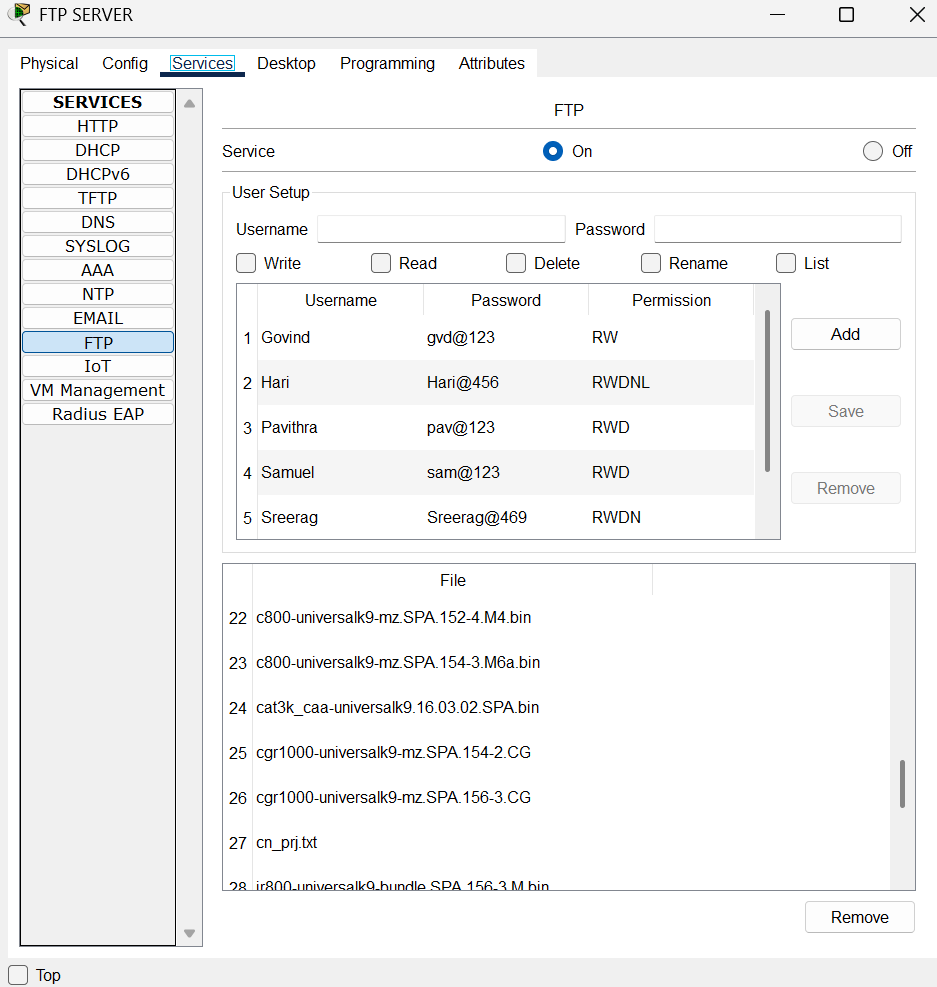

What is FTP?
The File Transfer Protocol (FTP) is a standard network protocol used to transfer files between a client and a server on a computer network. It enables users to upload and download files over TCP/IP-based networks such as the Internet or an intranet. FTP uses separate control and data connections between the client and the server, allowing users to authenticate, manage file directories, and execute transfer commands.
In educational and lab environments like Cisco Packet Tracer, FTP simulation is useful to understand client-server file interactions, permission settings, and routing.
About the Project
In this project, a basic FTP setup is configured across two networks (192.168.1.0 and 192.168.2.0). Using Cisco Packet Tracer, we demonstrate how users can upload and download files across networks through an FTP server. Routing Information Protocol (RIP) is used for dynamic routing between the routers to ensure devices can communicate seamlessly.
Steps to Configure FTP
- Create two networks: 192.168.1.0 and 192.168.2.0 (Class C)
- Connect networking devices such as routers, switches, and PCs
- Assign IP addresses, subnet masks, and gateways
- Enable RIP on routers for inter-network communication
- Set up FTP server with user credentials and permissions (read, write, delete, rename, list)
Routing Configuration (RIP)
Configure RIP as follows:
- Router1: 192.168.1.0, 10.0.0.0, 11.0.0.0
- Router2: 100.0.0.0, 12.0.0.0, 11.0.0.0
- Router3: 192.168.2.0, 12.0.0.0, 11.0.0.0
FTP Commands
ftp [IP]– Connect to FTP serverdir– List available files on the serverput filename– Upload a file to the serverget filename– Download a file from the server
Network Topology

File Transfer Demonstration
1. Uploading File to Server (Using put)
PC2 uploads cn_prj.txt to the FTP server using:
put cn_prj.txt
2. FTP Server User Configuration
The FTP server is configured with multiple user accounts, each with different permission levels such as Read, Write, Delete, Rename, and List. The server allows secure access to files using specific usernames and passwords.
3. Downloading File from Server (Using get)
PC4 downloads Test1.txt using:
get Test1.txt